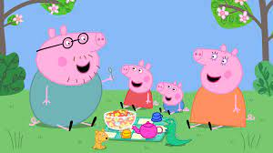
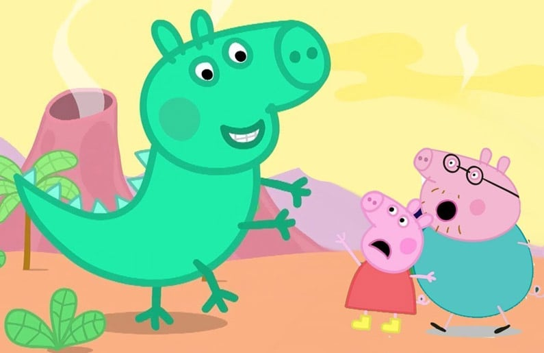
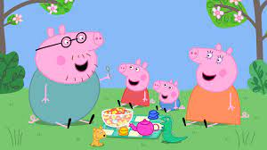
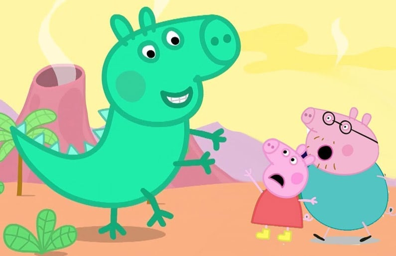
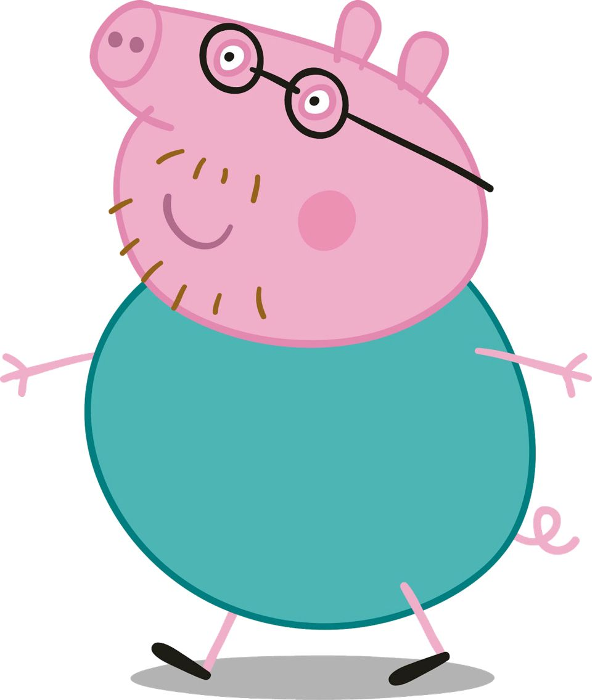
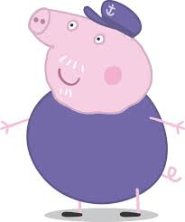
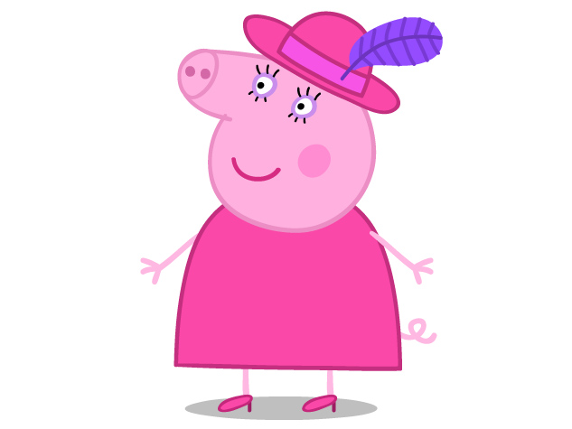

GG pal lobby
PePPa
Una serie donde unos personajes simpáticos llenos de energía y actividad donde predomina el compañerismo.
 



Participantes.
- Mamá cerdita
- Papá cerdito
- Peppa
- George
- Abuelo cerdito
- Abuela cerdita
Mamá cerdita
Es uno de los personajes principales de la serie Peppa, también es la mamá de Peppa, George y la esposa de Papá Cerdito.
Ella es una cerdita como cualquier otra, mide más o menos 1.50 metros de altura, lleva muchos vestidos que le gustan, aunque
el primario siempre va a ser su limpio vestido de color naranja, cuyo sale en todos los episodios.

Papá cerdito
Es el cuarto personaje principal de la serie Peppa. Es un poco distraído. Trabaja en una oficina con el Señor Liebre y
la Señora Gatuna, se encarga de resolver ecuaciones, incógnitas, todo lo que tiene que ver con la matemática.

Peppa
Una cerdita de 5 años que vive con sus padres y su hermano y dedica sus días a jugar con sus amigos, una serie de
diferentes mamíferos que tienen su misma edad.

George
Es uno de los cerditos de la Ciudad de Peppa, tiene 2 años y medio y sus 2 mejores amigos son Richard Liebre y
Edmond Elefante. El desea que todos sean sus amigos, pero a veces se siente triste por que no hay muchos niños pequeños..

Abuelo cerdito
Es muy bueno e inteligente. Le enseña a Peppa y a George algo de Jardinería: plantas, flores. Le gusta
cosechar semillas en el huerto, esencialmente con Peppa y George, siempre les deja que jueguen en el huerto,
le explica mucho sobre la jardinería a ellos.

Abuela cerdita
Es un personaje principal en la serie Peppa. Ella es la abuela de Peppa y George, mamá de Mamá Cerdita y
esposa de Abuelo Cerdito. Aparece por primera vez en el episodio 4 de la 1ª temporada "Lucas, el Loro". La
abuela cerdita les dice a Peppa y a George 'mis pequeños amados'. Tiene mucha hablididad en la cocina y puede
hacer que los vegetales del abuelo cerdito luzcan perfectas en una ensalada de verduras.

Nota: Sin pena.
Ahora, vamos a ver cual es tu favorito.
Formulario